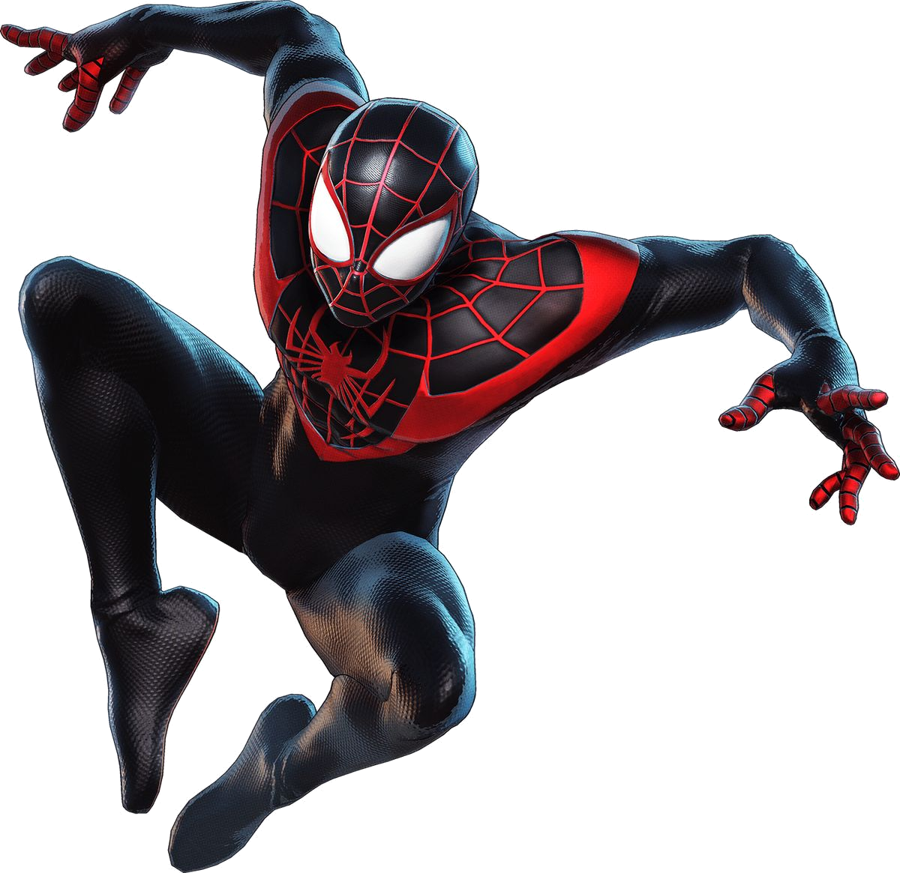

Origem
Criado em 2011 por Brian Michael Bendis e Sara Pichelli, Miles é o primeiro Homem-Aranha afro-latino dos quadrinhos. Filho de pai afro-americano e mãe porto-riquenha.
CONSCIÊNCIA NEGRA • PERSONAGENS FICTÍCIOS
"A máscara não muda quem você é."

Carregando experiência...
Miles Morales é mais que um Homem-Aranha. É a prova viva de que representação importa — e de que a força nasce da identidade, não apesar dela.
Um garoto do Brooklyn que carrega duas culturas, um legado e a coragem de ser ele mesmo.
Criado em 2011 por Brian Michael Bendis e Sara Pichelli, Miles é o primeiro Homem-Aranha afro-latino dos quadrinhos. Filho de pai afro-americano e mãe porto-riquenha.
Além dos poderes clássicos do Aranha, Miles tem a camuflagem (invisibilidade) e o toque venenoso (bioeletricidade).
Suas roupas, música e gírias refletem o Brooklyn. O uniforme preto e vermelho virou ícone de uma nova geração.
Miles não substitui Peter Parker — ele expande o mito. Prova que qualquer um pode usar a máscara.
Eu não tenho que ser o Peter. Eu só tenho que ser eu.
Por que um personagem fictício importa na luta real por representação?
Durante décadas, super-heróis eram, em sua maioria, brancos. Quando uma criança negra via apenas heróis que não se pareciam com ela, a mensagem implícita era: "você não pode ser o herói da história."
Miles Morales quebra essa narrativa. Ele é inteligente, corajoso, imperfeito — e negro. Isso permite que milhões de crianças se vejam como protagonistas.
Estar nas telas, nas HQs e nos jogos. Ser visto é o primeiro passo para ser respeitado.
Miles não é "um Peter pintado de preto". Tem voz, família e cultura próprias.
Mostrar que a força vem da identidade, não apesar dela.
Clique em cada poder para explorar o que torna Miles único.
Clique em uma das cartas acima para ver detalhes.
Ultimate Fallout #4 — Miles estreia nos quadrinhos da Marvel.
Ultimate Comics: Spider-Man consolida o personagem.
Miles entra no universo principal da Marvel (Terra-616).
Filme animado vence o Oscar e populariza Miles mundialmente.
Jogo solo aclamado, com cultura negra em destaque.
Sequência expande o multiverso e a mensagem de identidade.
Teste seus conhecimentos sobre Miles e a Consciência Negra.